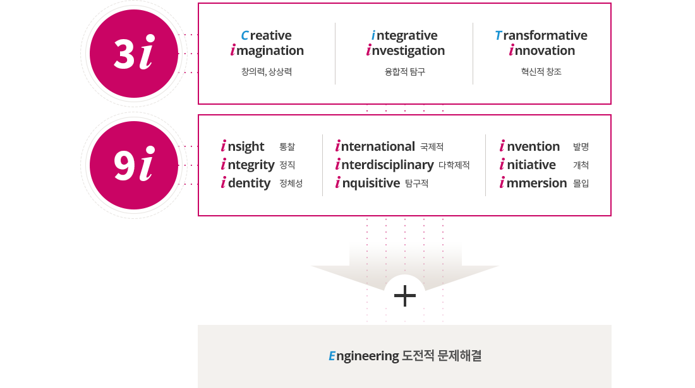

@@include('sub_visual.html',{
"title" : "교육철학",
"type" : "type3",
"sub_menu" : "교육"
})
인재상 : i형 인재
- 창의적 상상력, 융합적 탐구, 혁신적 창조에 기반한 교육/연구를 근간으로 육성된 인재
- 자기 주도적이고 도전적인 문제해결 역량을 갖춘 인재
- 사회적 기업가 마인드를 갖춘 세계 최고 수준의 인재

- 3i
- creative imagination / 창의력, 상상력
- integrative investigation / 융합적 탐구
- transformative innovation / 혁신적 창조
- 9i
- insight / 통찰
- integrity /정직
- identity / 정체성
- international / 국제적
- interdisciplinary / 다학제적
- inquisitive / 탐구적
- invention / 발명
- initiative / 개척
- immersion / 몰입
engineering 도전적 문제해결